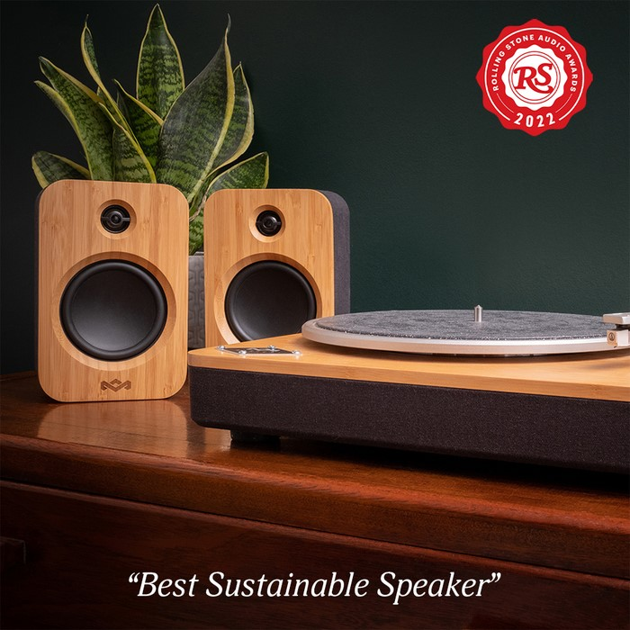

Artículos
Parlante MINI ALTAVOZ BLUETOOTH PORTÁTIL $359.97
Comprar
Parlantes DUO DE ALTAVOCES $359.97
ComprarParlante ALTAVOZ BLUETOOTH NO BOUNDS XL $359.97
ComprarParlante MINI ALTAVOZ BLUETOOTH PORTÁTIL $359.97
ComprarParlantes DUO DE ALTAVOCES $359.97
ComprarParlante ALTAVOZ BLUETOOTH NO BOUNDS XL $359.97
Comprar